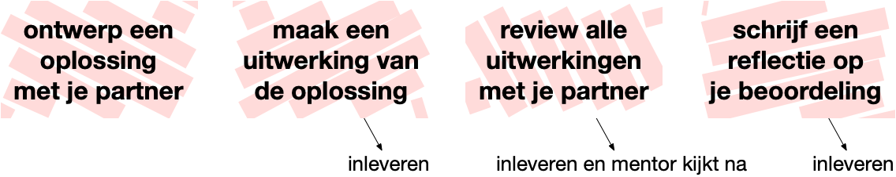
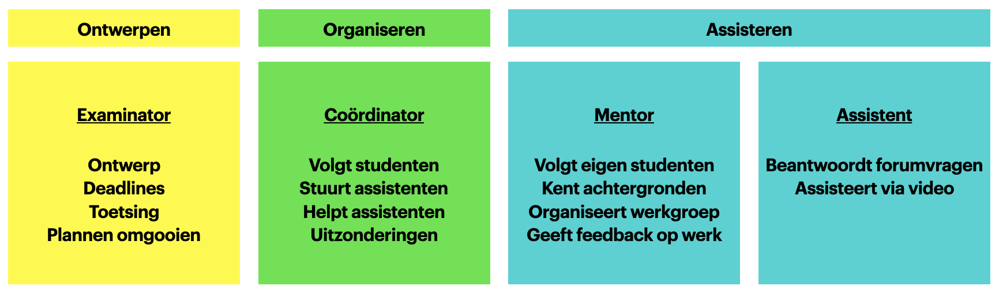

Gebaseerd op versie 2016 door Hella Haanstra.
Het doel van de Minor Programmeren is om studenten die geen programmeerervaring hebben een veilige omgeving te bieden om te leren programmeren, om kennis te maken met ideeën uit de informatica, en om ervaring op te doen met technieken uit de software engineering.
Het programma is als volgt:
Programmeren 1
Programmeren 2
Programmeerplatform
Programmeerproject: een volledig zelfgedefinieerd project
Programmeertheorie: een project uit de heuristiekencatalogus, met teamwork
De meeste vakken kunnen naar keuze in fulltime of parttime gevolgd worden. Studenten maken deze keuze al bij de aanmelding. Alleen Programmeertheorie wordt uitsluitend in de 4-weekse periodes in januari en juni aangeboden en is dus voor alle studenten fulltime.
CS50 is een cursus Introduction to Computer Science van Harvard1. Bij de minor Programmeren splitsen we de cursus in twee delen waarvoor studenten zich afzonderlijk inschrijven: Programmeren 1 en Programmeren 2. In deze handleiding gaan we voornamelijk in op de wijze van assisteren die voor deze vakken van belang is, omdat beginnende assistenten allereerst bij deze vakken aan de slag gaan.
Programmeren 1 is een echte inleiding tot het programmeren, waar basisconcepten zoals loops, arrays en algoritmen voorbij komen. Er wordt geoefend met problemen oplossen en met de werking van een programmeertaal (C).
Programmeren 2 behandelt de basis van datastructuren en objectgeorienteerd programmeren. Eerst datastructuren “met de hand” opbouwen in C, en dan kijken hoe Python een heleboel kant-en-klaar aanbiedt.
De meeste studenten die de minor volgen hebben weinig tot geen ervaring met programmeren. Precies voor hen is CS50 ontworpen. Toch kan het niveau van studenten erg uiteen liggen, dus hier moeten we rekening mee houden. Veel studenten hebben na de minor de smaak te pakken en kiezen in hun vervolgtraject voor andere programmeervakken of zelfs een master in het vakgebied.
Studenten zullen verreweg de meeste tijd besteden aan het maken van grotere programmeeropdrachten. Elke cursusmodule bestaat uit enkele van deze opdrachten. De werkwijze voor studenten is vastgelegd in een schema:

De werkwijze bij andere vakken in de Minor Programmeren is steeds aangepast op de verschillende soorten opdrachten die daar gegeven worden. Bovenstaande werkwijze wordt later in deze handleiding verder toegelicht.
Naast de opdrachten worden studenten geacht diverse oefeningen te maken, en zij moeten een tentamen doen voor afronding van de cursus. Het doel van de oefeningen en het tentamen is om studenten nadrukkelijk kennis te laten nemen van de basisconcepten van het programmeren. Deze concepten krijgen bij het maken van alleen grote opdrachten vaak minder aandacht.
TODO: tentamen is optioneel?
Bij de uitvoering van de cursus zijn de verantwoordelijkheden verdeeld over de medewerkers. Als assistent heb je allereerst de verantwoordelijkheid om een aantal uur per week studenten uit de hele groep te assisteren met hun programmeeropdrachten, via een forum of direct met één student in een videogesprek. Daarnaast ben je voor een vaste groep studenten de mentor. Als mentor weet je heel precies hoe de cursus in elkaar zit en welke regeltjes van toepassing zijn, voor zover die in de studiewijzer vermeld staan. Je leert de studenten uit je groep goed kennen en houdt nauwkeurig hun voortgang bij—zij melden bijvoorbeeld ziekte allereerst bij jou. Dit is bovendien de groep studenten van wie je het werk nakijkt.

Het hoofd van een cursus werkt met de mentoren om de voortgang van alle studenten bij de houden. Het hoofd heeft hierbij toegang tot de resultaten en inzendingen van alle groepen, en kan zo de verschillen goed zien en makkelijk de probleemgevallen vinden. Voor inlichtingen over de probleemgevallen zal altijd de mentor worden geraadpleegd. Het hoofd is ook degene die assistenten helpt om goed hun werk te kunnen doen en heeft wekelijks contact met ze. Tot slot verzorgt het hoofd de wekelijkse plagiaatcheck en eventuele gesprekken met studenten hierover.
De coördinator heeft allereerst het totaaloverzicht over hoe de cursus in elkaar zit en heeft als verantwoordelijkheid om te zorgen dat elke student de cursus goed kan doorlopen en daarvoor uiteindelijk een passend cijfer ontvangt. Ook kan de coördinator studenten helpen die niet goed meekomen en tussentijds hun plannen willen omgooien. De coördinator dient bovendien als contactpersoon voor studieadviseurs, examencommissie e.d.
Er zijn vier manieren waarop de studenten actief betrokken worden bij de cursus: hoorcolleges, werkgroepen, checkups en assistentie. Deze worden hier kort besproken.
De hoorcolleges worden grotendeels gegeven door David J. Malan van CS50 en zijn per video beschikbaar1. Elke week worden de colleges die bij de problem set horen beschikbaar gesteld via de website. De hoorcolleges zijn vrij self-explanatory, dus je kunt van de student verwachten dat hij/zij het in zijn/haar eigen tijd kijkt.
Werkgroepen worden online georganiseerd door de mentoren. In de werkgroepen krijgen studenten de kans om samen de voortgang te bespreken, de oefeningen door te nemen, tips uit te wisselen over het aanpakken van problemen en medestudenten en mentor beter te leren kennen. Gebruik van een camera is verplicht bij de werkgroep. Meer over deze werkgroepen in een later hoofdstuk.
Fulltimestudenten doen elke dag om 9:30 een video-checkup met hun mentorgroep, maar zonder de mentor. De bedoeling is om kort te reviewen hoe iedereen ervoor staat met de opdrachten en wat de plannen voor vandaag zijn. Dit is ook het moment waarop studenten weer even met elkaar kunnen afspreken, bijvoorbeeld om elkaar te helpen.
Elke student zou regelmatig hulp nodig moeten hebben tijdens het programmeren (maar niet teveel). Er zijn drie mogelijkheden:
Vragen plaatsen op het online forum Ed kan op elk moment. Medestudenten worden geacht deze vragen zoveel mogelijk te beantwoorden. Waar dat niet lukt zullen assistenten reageren. Het is echter moeilijk om als beginner een goede vraag schriftelijk in te dienen. Dat betekent dat een vraagsteller soms uitgenodigd moet worden voor mondelinge assistentie om tot wederzijds begrip te komen.
Elke werkdag tussen 13 en 17 uur is er video-assistentie. Studenten geven via de cursuswebsite aan dat ze hulp nodig hebben. Assistenten die aan het werk zijn krijgen inzage in de lijst met vraagstellers en werken deze op volgorde af. Zodra ze aan de beurt zijn krijgen studenten een linkje naar de videochat van de assistent die hen gaat helpen.
Voor meer technische hulp (bijvoorbeeld met installatie) is het mogelijk een losse afspraak te maken. Hiervoor is een planningstool op Calendly beschikbaar.
Als studenten niet goed geholpen kunnen worden dan meldt de assistent dit altijd via een to-do in Basecamp. Hoofd of coördinator kan dan zorgen dat men sowieso nog even bij de student nagaat of er al voortgang is, en zonodig extra hulp bieden.
TODO: procedure to-do in Basecamp
Deze uitleg over probleemoplossen is een nieuwe handleiding voor studenten. Zij gaan deze vanaf module 1 direct toepassen. Mentoren helpen studenten nadrukkelijk bij het volgen van dit proces en zorgen bovendien tijdens de werkgroepen voor het matchen van partners voor de delen waar samengewerkt zal worden.
Below you’ll find three phases that you are going to move through will solving some module’s programming problems. For each problem, you will first perform an analysis together with your partner. Then, you will implement a solution in program code by yourself (with generous help from the course’s staff, of course). Finally, for all of the problems together, you will do a review with your partner to learn how to improve code.
Problems in this course are fairly large. Most of these problems have a couple of parts that work together. The first thing to do is to roughly identify those parts, because you can apply the method below on each of those separate parts. For example, many programs have a section that is responsible for getting user input, separate from the main algorithm. Having done that, proceed to step 1.
Step 1. Solve instances by hand (with partner)
You have read the problem description and are ready to start analyzing. To do this, come up with a number of instances of the problem, each of which combines some input with the expected output.
Most likely, your problem description already contains one or two examples of running the program, with accompanying solutions. Take two other examples and try to solve these by hand, predicting the outcome for each and carefully thinking how you actually get to the solution.
Do you have a problem getting to the right solution or finding how to make some calculation? That means that either the problem is underspecified or you might lack a tiny bit of knowledge from the problem domain. Try to figure out which one it is and ask for help if needed!
Intermezzo: Watch the walkthrough
Some of our problems come with a walkthrough movie in which some of the core assumptions and ideas are explained. If it appears that you lack some domain knowledge, it is likely that this is explained in the walkthrough.
Ideally, you watch the walkthrough just after you have tried solving some of the problem instances yourself. Note that the walkthroughs often also explain practical matters of getting input and formatting output. The Steps only concern the core algorithm, so be sure to get back to the walkthrough as soon as you are ready to code your solution.
Step 2. Write down your steps (with partner)
The real analysis happens when you try to retrace your steps for solving the problem. Try to find which exact steps you are taking and writing those down. You would do this in plain language, writing instructions that you might give to someone else to work out the problem.
You might find that it’s hard to do for some examples, because you can too easily “see” the answer, which prevents you from deeply analyzing it. In that case it is advisable to find more complicated example problems. This is also something you could ask help with if needed!
Step 3. Propose a general solution (with partner)
If you have three or four examples worked out, you should be able to start composing a more general solution. Carefully compare the different examples, finding which steps are similar and which are different. Especially note if you did something multiple times (how often?) and how this relates to the example.
If you can’t quite find a difference, chances are that your steps are still too abstract and you may try specifying smaller steps. Also, try to work some more examples when you get stuck. Then, try comparing the steps again.
Your algorithm should again be written in plain language, but this time clearly specify what kind of input the algorithm can work with. If the algorithm is based on a number, what kind of numbers would be acceptable? If it is based on a string, what kinds of strings would be reasonable to use the algorithm with?
Step 4. Test the algorithm (with partner)
Now you can have a look if you can verify that your algorithm is correct. Take a few new test cases and very carefully trace the steps. To ensure that steps aren’t ambiguous, you might also want to have someone else test the steps for you. Having precise steps that are not open to interpretation will make it easier to translate the steps into code.
Testing thoroughly might also reveal some fundamental problems in your algorithm. You may have made an assumption about the input that makes the solution easier to find, but prevents your algorithm working with other input. Ideally, you are able to fix these bugs before you actually start coding your solution.

Step 5. Translate to code (separately)
Once you are satisfied that your algorithm is general enough, and you have tested it thoroughly with your partner, you can start translating it into a working program. Some actual program code may already be provided by us, so make sure that you download that and use it as a starting point. Identify the place where you should be implementing your algorithm.
For this step, you can switch from working with domain knowledge to working with knowledge of the programming language. You have already specified the steps to take and now need to translate these into the constructs that are available in your programming language. If you can’t quite figure out how to translate a step, be sure to ask for help!
Step 6. Test the program (separately)
The simplest way to test your program is to use exactly those problem instances that you used in steps 1 and 2. You already know the correct solutions to those instances and should be able to verify that your program now provides the same solution when run.
However, if you see a difference, you may have made a mistake somewhere while specifying the algorithm or while implementing the solution in code. At that point, your job it to figure out where the problem might be. Again, this is an excellent point to ask for help if needed.
As soon as you find that your program appears to be functioning correctly, use the provided test tools to double-check that the course staff agrees that your program works according to the specification. At this point, you may unexpectedly find that the tool doesn’t think it works! In that case, take special notice of the formatting of your program’s output. Is everything exactly as expected?
Step 7. Debug the program (separately)
Have you found an apparent problem with the program? Then find out what is going on, either tracing it back to a bug in your implementation, or a more fundamental problem in the steps of your algorithm.
One thing to check is if you have a systematic error in your program or that it doesn’t work for only part of the test cases. This may help you find the source of the problem.

Step 8. Peer review your programs (with partner)
When everything is in order, and your program is found to be correct, you are going to do a peer review with your partner. The idea is not to compare your solutions per se, but more to improve each solution as it is.
The goal of improvement is to make the programs easier to read and to understand. For each module, several aspects are listed to look out for. Read the explanations about these aspects before doing the actual review. Try to stick to these aspects, and especially take care not to try to influence your partner too much with your own ideas. The goal of this part of the course is to have you practice with techniques to make code better.
First, take the programs of your partner and browse through them. Your partner listens to what you say as you are trying to read their programs. Try not to give advice, but instead think aloud about what happens when you read the programs. Your partner makes notes of what they would like to change or any problems that appear during the review. When you’re done, your partner asks you about things that were not quite clear.
Then, your partner takes your programs and browses through those. Again, your partner will be thinking out loud while trying to understand your code, and you will be making notes. You will not be changing your code during the review, but ask for clarifications and even propose ideas when your partner is done.
Step 9. Improve your programs (separately)
After you have reviewed each other’s code, you can each take to actually improving your own code. Always keep in mind that your partner’s opinions don’t matter as much as how they struggle to read or understand your code. This is not the time to do a complete overhaul of your algorithm to make it more efficient, but instead, to make note of small things that you can improve to make the code itself better.
TODO: Nakijken en reflectie invoegen
Mentoren krijgen een groep van 8–12 studenten voor wie zij altijd het eerste aanspreekpunt zijn bij de cursus.
Mentoren leren alle studenten uit hun mentorgroep goed kennen. Dat betekent dat ze na een paar weken het volgende weten over deze studenten:
Hoewel mentoren dus belangrijke details over hun studenten kennen, beperkt het contact met hun studenten zich wel tot zaken die van belang zijn voor het onderwijs.
Bij meer persoonlijke problemen proberen we altijd goed gebruik te maken van de faciliteiten van de universiteit, zoals studieadviseurs en studentendecanen. De cursuscoördinator weet meer over de mogelijkheden en kan studenten verwijzen. De mentor hoeft dat niet zelf te doen, maar is vaak wel de eerste die de problemen signaleert.
Aan de andere kant ligt het voor de hand dat een mentor ook aanspreekpunt is voor klachten en voor grote frustraties die studenten opbouwen tijdens het programmeren. Dit kan bij naar boven komen tijdens de werkgroepen. Dat is geen probleem! Zie het niet als een persoonlijke aanval, maar als een noodzakelijke uitlaatklep.
Bij online onderwijs is het vooral de groepsvorming die een stuk lastiger is dan bij onderwijs waar studenten continu met elkaar aan één tafel zitten. Daarom maakt elke mentor een Slack-account aan voor de eigen studenten. Alle studenten worden geacht daar te registreren. Slack is dan de plek waar praktische afspraken worden gemaakt en waar snelle vragen worden uitgewisseld. Contact is laagdrempelig. Maar: mentoren zullen niet permanent beschikbaar zijn via Slack. Dit wordt in de studiewijzer verteld en ook de mentor zelf zal dit bij de eerste werkgroep duidelijk maken.
TODO: Whatsapp niet toegestaan om werk/prive goed te kunnen scheiden?
Gebruik van de camera is voor alle studenten vereist (laat weten als je omgeving niet geschikt is om te kunnen videobellen, dan kijken we of we een alternatieve werkplek kunnen vinden).
Neem elke week tijdens het practicum je eigen studenten apart en spreek individueel de feedback van vorige opdracht door. Word bekend met je eigen studenten, zodat ze zich op hun gemak voelen. Nodig ze uit vragen te stellen over de huidige opdracht of de feedback van vorige week. Neem ook de tijd voor studenten die het goed doen; praat met hen over verbeterpunten of hackeropdrachten. Indien het minder goed gaat met een student, verwijs je dit door naar de hoofdassistent. Maak zelf geen beloftes of uitzonderingen. Laat de student tevens een mail sturen naar help@mprog.nl.
Mentoren hebben een een belangrijke rol in de planning van de stappen voor studenten. Zij hebben voor een deel van het werk een partner nodig
De eerste wordt optioneel samen gedaan, dus tijdens de werkgroep moeten studenten gestimuleerd worden een partner te kiezen om mee samen te werken.
De partner voor code review deel jij in. Dit moet voor de hele groep wekelijks een andere partner zijn, zodat studenten kennismaken met verschillende perspectieven.
Je hoeft je als assistent niet bezig te houden met:
Komt een van deze dingen naar voren, verwijs dit altijd door naar de hoofdassistent. Vraag de student ook een mail te sturen naar help@mprog.nl. Zorg wel altijd dat je zelf ook het hoofd op de hoogte brengt, omdat studenten het vaak moeilijk vinden om verdere hulp te vragen. Het is belangrijk dat wij vanaf de eerste vraag om hulp medeverantwoordelijkheid nemen en een student niet aan z’n lot overlaten.
Hiervoor is al kort besproken wat er van de student verwacht wordt tijdens het computerpracticum, nu volgt een korte beschrijving van wat een assistent biedt. Er zullen altijd meerdere assistenten aanwezig zijn, dus stimuleer elkaar. Probeer niet stil te zitten, maar aanwezig te zijn in de ruimte. Een rondje maken langs studenten die je nog niet gesproken hebt is dan een goede activiteit. Wees ook niet bang om hulp te vragen aan mede-assistenten, met zijn twee ̈en weet je altijd meer dan alleen.
TODO: Steps integreren
Tijdens het practicum helpen we studenten op vier gebieden:
Studenten kunnen een hulpvraag indienen via de website. Deze hands verschijnen voor de assistenten op de website en kunnen zo overzichtelijk behandeld worden. Zodra je bij een student geweest bent en de vraag beantwoord hebt, teken je de hands af. In de lijst zullen ook studenten zijn die geen vraag gesteld hebben, maar die we een tijdje niet gesproken hebben, of nieuwe studenten. Heet de nieuwe studenten welkom, stel jezelf voor, maak een kort praatje over hoe het computerpracticum werkt en leg uit hoe de student een vraag kan stellen.
Omdat er veel zelfstandigheid van de student verwacht wordt, is het niet de bedoeling dat assistenten kant-en-klare oplossingen aandragen als een student vastzit. Dit zorgt er namelijk voor dat de student niet meer zelf op de oplossing kan komen en er minder van leert. Dit kan uiteindelijk zelfs voor problemen bij latere opdrachten zorgen.
Wat werkt dan wel? Laat de student zijn/haar eigen vragen beantwoorden. Door vragen terug aan de student te stellen wordt deze uitgedaagd op een andere manier naar zijn/haar probleem te kijken. Probeer met vragen erachter te komen waar in de kennis nog een stukje mist (probleemdecompositie). Zodra het probleem concreet is, kun je de student gericht op delen van de stof wijzen die hij/zij nog door kan kijken, of geef een hint (procesondersteuning). Af en toe de student een stukje van de puzzel meegeven is dan ook geen probleem, maar houd het beperkt! Hoe meer ze zelf uitvinden, hoe beter.
Door de student zo veel mogelijk tools mee te geven om de opdrachten op te lossen, wordt de student steeds zelfstandiger. Wat in de toolset niet mag ontbreken is debugging. Dit varieert van goed een fout lezen in de terminal tot het bedienen van gdb. Het is aan de assistent de taak om de student deze vaardigheden aan te leren. Kijk voor een opfrisser in Think Python2, hoofdstuk 20: Debugging.
Lang niet altijd heeft een student een concrete vraag op het moment dat je als assistent ernaast staat. Help de student in dat geval de vraag formuleren. Dit gaat goed in combinatie met de probleemcompositie. Sommige studenten kunnen eerst nog wat meer tijd gebruiken om zelf wat langer naar hun programma te kijken; probeer zelf een juiste inschatting van de situatie te maken om vervolgens te besluiten de student direct te helpen, of later terug te komen.
Probeer gemiddeld 10 minuten per student aan te houden tijdens het practicum.
Complimenteer de student op een duidelijke manier. Kies voor ‘heel goed antwoord!’, ‘zeker weten’ of ‘precies’, etc. Probeer een droog ‘ok’, ‘hmm’, ‘uhu’ te vermijden. Ook als de student een langdradig antwoord geeft, probeer iets te vinden waar je positieve feedback op kunt geven.
Laat je feedback betrekken op het specifieke antwoord van de student.
Bijvoorbeeld als de student een for-loop voorstelt bij mario.c, antwoord iets in de trant van: ‘heel goed, je ziet dat er een vorm van herhaling nodig is’.
Probeer voort te bouwen op het antwoord van de student. Als het antwoord dat de student geeft niet helemaal naar wens is, probeer het dan mee te nemen in je volgende vraag. Iets als ‘je hebt goed gezien dat je de String moet opdelen, wat is de volgende stap?’ werkt motiverend.
Probeer ‘ja, maar…’ te vermijden. Dit is een logische reactie op een (deels) fout antwoord, maar kan heel erg demotiverend werken. Probeer duidelijk te scheiden wat goed was en wat fout was en beloon daar ook naar. Je kunt ook de vraag stellen ‘hoe ben je daarop gekomen?’; dit is tevens een vraag die je kunt stellen als het antwoord wel goed is!
Maak geen aannames over wat studenten al weten. Een student kan soms met zelfs het makkelijkste probleem in de knel zitten en dan is het erg frustrerend als er wordt gezegd ‘probeer eens wat harder na te denken’. Toets wat de student wel weet en bouw daarop voort. Stel open vragen en laat de student zelf het probleem oplossen, probeer niets voor te zeggen!
Het eindcijfer voor deze cursus wordt bepaald door het totaal aantal punten voor de modules. De puntenscore leidt tot een cijfer tussen 1 en 10. De Scratch-module word “afgetekend” en telt niet mee in het eindcijfer.
Modules 1 t/m 4 kunnen elk 0–6 punten opleveren. Voor elke module zijn diverse aspecten aangegeven op basis waarvan de punten voornamelijk (maar niet uitsluitend) worden bepaald. De aspecten gaan over codekwaliteit, waarover je in module 1 meer leert. De schaal is als volgt:
De nakijkdeadline is maandagavond 23:59. Dit betekent dat alle studenten op dinsdag hun cijfer kunnen bekijken. Als een student vraagt of hij/zij de opdracht later kan inleveren, is het antwoord altijd nee. Adviseer de student altijd iets in te leveren, ook als de opdracht niet helemaal af is.
Elke module moet op de vooraf bepaalde deadline volledig werkend ingeleverd zijn, waarbij de correcte werking automatisch wordt getest met check50.
Daarna volgt een deadline waarvoor je je werkende programma’s verbetert en nogmaals inlevert.
Als mentor kun jij toestaan dat een student de opdracht één of twee dagen later inlevert. Dat
In het geval van planningsproblemen of een dag ziek zijn kun je in overleg met je mentor de deadline één of twee dagen opschuiven. Je opdracht wordt dan gewoon nagekeken. Breng altijd direct je mentor op de hoogte en vraag om advies over het halen van verdere deadlines. Systematisch achterlopen is niet mogelijk.
Voor module 0 is geen uitstel mogelijk. Je moet op tijd gestart zijn met het vak om mee te mogen doen.
Het zal voorkomen dat tijdens het nakijken blijkt dat een opdracht verdacht veel op de opdracht van een andere student lijkt, of oplossingen bevat die ook op het internet te vinden zijn. Indien je serieus plagiaat vermoedt, meld dit altijd bij de hoofdassistent.
Alle opdrachten worden wekelijks onderling en met eerdere inzendingen vergeleken met behulp van een detectieprogramma. De uitslag noemen we de plagiaatschaal. Scoor je hoog op de schaal dan spreek je op korte termijn met één van de docenten die je zal voorlichten en helpen met de beste aanpak voor dit vak. De ervaring leert dat je niet hoog scoort op de plagiaatschaal als je niet naar andermans uitwerkingen kijkt bij het maken van je eigen uitwerking. Maak je er dus geen zorgen over; ons doel is je te helpen dit te voorkomen.
Nu we met De Stappen werken is het nog duidelijker geworden waar je wél en waar je niet samenwerkt. De onderdelen waar samengewerkt kan worden zijn duidelijk gedefiniëerd en verlopen volgens een vaste procedure. Daarnaast is het wel mogelijk dat een student een andere student helpt. Het allerbelangrijkste is dat de student die geholpen wordt nooit voorbeeldcode te zien krijgt of zodanig wordt geïnstrueerd dat de code maar gedeeltelijk zelf bedacht wordt.
Vragen over plagiaat moeten studenten zelf stellen aan een docent, via help@mprog.nl. Als ze willen volgt er een persoonlijk gesprek.
Probeer bij het becijferen het niveau van de individuele student mee te nemen. Vergelijk de student met zichzelf: in hoeverre heeft de student de feedback van voorgaande weken toegepast en is hij of zij vooruitgegaan? Vergeet niet ook positieve feedback te geven! Dit wordt vaak vergeten omdat er eerder punten afgetrokken worden voor fouten dan punten gegeven voor correcte code. Feedback wordt veel prettiger verwerkt als ook de positieve punten worden aangestipt. Geef feedback op het proces, niet op de student. Dit is ook al kort aangestipt bij gesprekstechnieken voor het computerpracticum. Directe feedback op de persoon is veel minder effectief dan feedback op het proces 4. Geef daarom in de feedback goed aan waarom iets goed of minder goed is. Bied daarbij tips aan, zodat de student de volgende keer de knelpunten beter kan aanpakken. Tijdens de wekelijkse bespreking van de feedback kun je de feedback wat meer toelichten.
Heeft een student de hacker edition van de opdracht ingeleverd? Kijk deze dan op dezelfde manier na als dat je bij de reguliere opdracht zou doen. Dit komt omdat je van een goede student ook meer mag verwachten. Aan het einde van het vak wordt dit meegenomen.
Voor veel opdrachten bieden we ook een zogenaamde “hackerversie” aan. Deze is bedoeld voor studenten die zich wat comfortabeler voelen met programmeren en extra uitdaging zoeken. Wil je die inleveren, zorg dan dat je éérst de normale versie van de opdracht maakt en inlevert. Dat is namelijk de versie die beoordeeld zal worden en waarmee je een review doet.
Toch kan het leuk zijn om de hackerversies te doen, omdat het uitdagende puzzels zijn waar je veel van leert. Je krijgt 1 punt extra als je voor een module alle hackerversies hebt ingeleverd, omdat ze moeilijker zijn en je vaak ook meer code schrijft. Let daarbij dus op dat je zowel de normale versies als de hackerversies van de opdrachten inlevert.
Het is niet mogelijk om via video-assistentie hulp te krijgen voor de hackeropdrachten. Wel kun je er vragen over stellen via Ed.
Het is handig om na het nakijken nog even terug te gaan naar de eerste paar psets die je hebt nagekeken, omdat je dan misschien weer nieuwe dingen gezien hebt. Het is daarnaast handig om eerst een soort opdracht na te kijken (bijvoorbeeld eerst alle recover.c). Probeer niet altijd in dezelfde volgorde na te kijken.
In het begin zal het nakijken wat moeizaam gaan, maar probeer 10-15 minuten per student te spenderen. Probeer niet in herhaling te vallen, want dat kost tijd. Verwijs bij herhaaldelijke fouten naar je eerdere feedback. Daarbij telt ook mee dat sommige van de studenten de feedback nauwelijks lezen waarnaast andere studenten juist veel halen uit je commentaar. Kies op basis daarvan ook je prioriteiten uit en verspil niet al te veel tijd aan ongelezen feedback. Dat gezegd hebbende, als je merkt dat een student de feedback negeert, spreek hem of haar hier dan op aan tijdens het practicum. Grote kans dat ze het vergeten zijn of niet doorhebben hoe veel ze eraan kunnen hebben.
We gebruiken diverse platforms voor contact onderling en met de studenten.
Voor bijna al het onderling contact is er Basecamp. Je ontvangt een uitnodiging zodra je bij een vak aan de slag gaat.
Voor het contact met de studenten in jouw mentorgroep maak je een Slack aan.
Voor vragen over de stof, hulp met programmeren, technische ondersteuning, komen studenten naar Ed.
Als je niet weet hoe je een vraag moet stellen of je weet niet waar je moet beginnen met het implementeren van je opdracht, dan is er video-assistentie. De assistentie is beschikbaar van maandag t/m vrijdag tussen 13 en 17 uur, en aanvragen doe je via deze website . Let op dat het rondom deadlines vaak erg druk is en dat de wachttijd kan oplopen!
Voor het maken van persoonlijke planningsafspraken en het op de hoogte houden van de docenten over later inleveren stuur je een officiële mail naar help@mprog.nl.
Je moet diverse accounts aanmaken om goed te kunnen assisteren. Volg de stappen hieronder en zorg vooral dat je alle diensten goed uittest, om latere stress te voorkomen! (Bijvoorbeeld als het delen van een Zoom-linkje niet blijkt te werken.)
Voor Basecamp krijg je een uitnodiging via het bekende e-mailadres (je kunt dit dus niet zelf starten). Maak direct dit account aan. Je krijgt toegang tot een aantal kanalen:
Maak een account voor Programmeren 1 via https://prog1.mprog.nl/. Kies fulltime of parttime afhankelijk van waar je assisteert. Na enige tijd krijg je extra rechten, zodat je de gegevens van je studenten kunt inzien en hun werk kunt nakijken.
Lees de studiewijzer van Programmeren 1 heel nauwkeurig door zodat je deze niet tegenspreekt. Mis je iets in de studiewijzer of heb je een vraag? Post dan meteen een vraag in Basecamp bij het team “CS50x Herfst 2020”.
Maak een nieuwe Slack aan via https://slack.com/get-started#/create. Deze gebruik je voor informeel contact met je mentorgroep. Ken je Slack nog niet? Kijk dan bij Slack 101 voor de basis.
Maak een account voor Whereby via https://whereby.com/user/signup. Dit is een videodienst die volledig in de browser werkt. Deze dienst gebruik je voornamelijk voor het assisteren. Je krijgt een persoonlijke “kamer” met een linkje. Deze link geef je door aan het cursushoofd.
Maak een account voor Zoom via https://zoom.us/signup. Dit is een videodienst die het beste werkt met een eigen applicatie. Deze gebruik je voor je werkgroepen. Je kunt een link naar je persoonlijke “kamer” delen met je studenten via Slack.
A. B. Downey, Think Python. O’Reilly Media, 2012. ↩
A. Hadwin and S. Wilcox, “A handbook for teaching assistants,” Instructional Development Centre Queens University, Kingston, Ontario, K7L 3N6, 1999–2000. ↩
J. Hattie and H. Timperley, “The power of feedback,” Review of Educational Research, vol. 77, no. 1, pp. 81–112, 2007. ↩